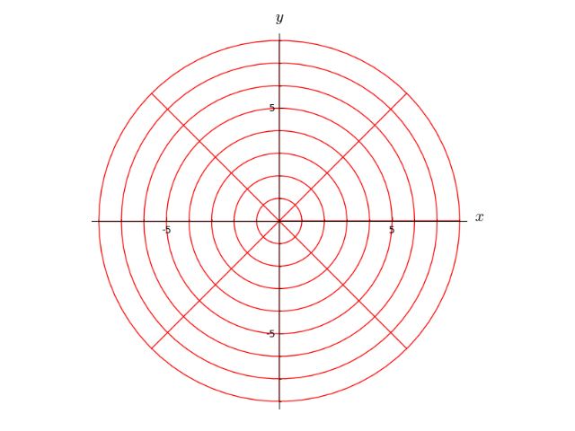
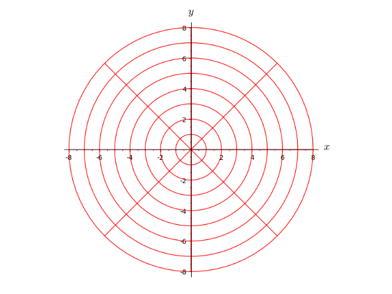
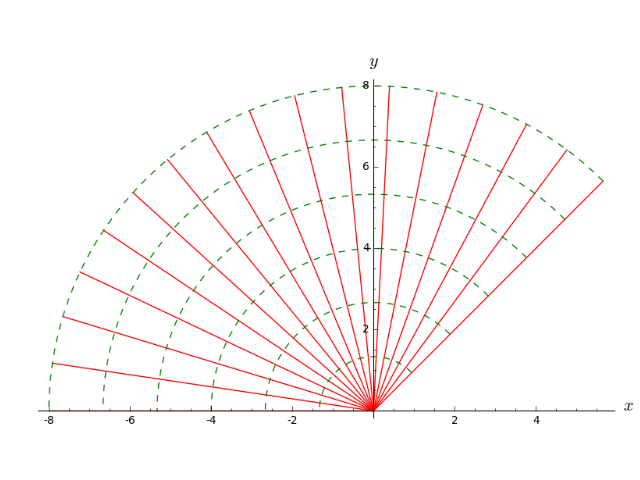
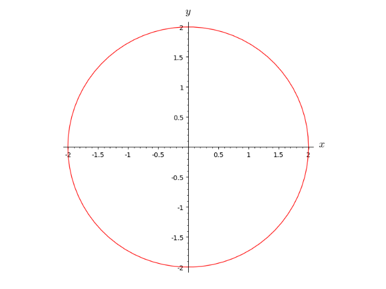
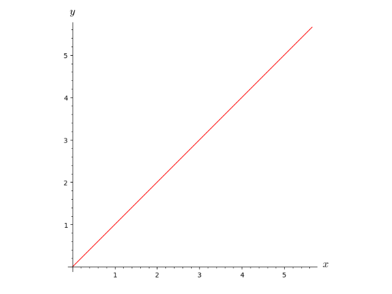
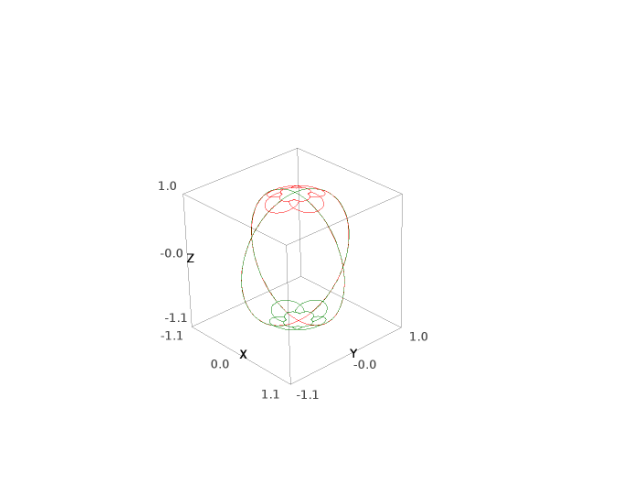
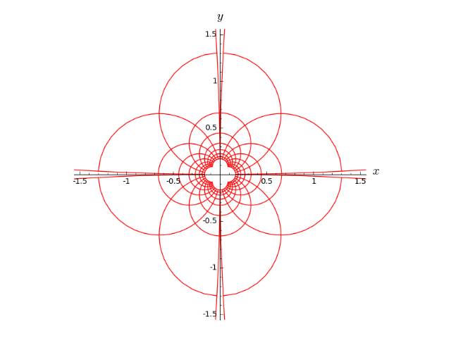
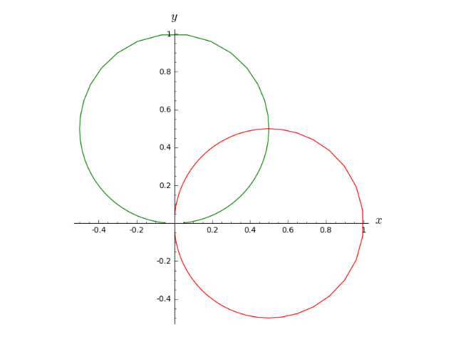
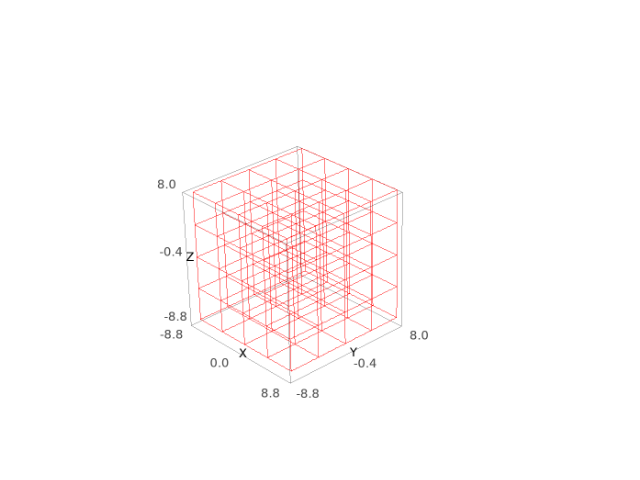

Coordinate Charts¶
The class Chart implements coordinate charts on a topological
manifold over a topological field \(K\). The subclass RealChart
is devoted to the case \(K=\RR\), for which the concept of coordinate
range is meaningful.
Moreover, RealChart is endowed with some plotting
capabilities (cf. method plot()).
Transition maps between charts are implemented via the class
CoordChange.
AUTHORS:
- Eric Gourgoulhon, Michal Bejger (2013-2015) : initial version
- Travis Scrimshaw (2015): review tweaks
REFERENCES:
-
class
sage.manifolds.chart.Chart(domain, coordinates='', names=None)¶ Bases:
sage.structure.unique_representation.UniqueRepresentation,sage.structure.sage_object.SageObjectChart on a topological manifold.
Given a topological manifold \(M\) of dimension \(n\) over a topological field \(K\), a chart on \(M\) is a pair \((U, \varphi)\), where \(U\) is an open subset of \(M\) and \(\varphi : U \rightarrow V \subset K^n\) is a homeomorphism from \(U\) to an open subset \(V\) of \(K^n\).
The components \((x^1, \ldots, x^n)\) of \(\varphi\), defined by \(\varphi(p) = (x^1(p), \ldots, x^n(p)) \in K^n\) for any point \(p \in U\), are called the coordinates of the chart \((U, \varphi)\).
INPUT:
domain– open subset \(U\) on which the chart is defined (must be an instance ofTopologicalManifold)coordinates– (default:''(empty string)) the string defining the coordinate symbols, see belownames– (default:None) unused argument, except ifcoordinatesis not provided; it must then be a tuple containing the coordinate symbols (this is guaranteed if the shortcut operator<,>is used)
The string
coordinateshas the space' 'as a separator and each item has at most two fields, separated by a colon (:):- the coordinate symbol (a letter or a few letters);
- (optional) the LaTeX spelling of the coordinate, if not provided the coordinate symbol given in the first field will be used.
If it contains any LaTeX expression, the string
coordinatesmust be declared with the prefix ‘r’ (for “raw”) to allow for a proper treatment of LaTeX’s backslash character (see examples below). If no LaTeX spelling is to be set for any coordinate, the argumentcoordinatescan be omitted when the shortcut operator<,>is used via Sage preparser (see examples below).EXAMPLES:
A chart on a complex 2-dimensional topological manifold:
sage: M = Manifold(2, 'M', field='complex', structure='topological') sage: X = M.chart('x y'); X Chart (M, (x, y)) sage: latex(X) \left(M,(x, y)\right) sage: type(X) <class 'sage.manifolds.chart.Chart'>
To manipulate the coordinates \((x,y)\) as global variables, one has to set:
sage: x,y = X[:]
However, a shortcut is to use the declarator
<x,y>in the left-hand side of the chart declaration (there is then no need to pass the string'x y'tochart()):sage: M = Manifold(2, 'M', field='complex', structure='topological') sage: X.<x,y> = M.chart(); X Chart (M, (x, y))
The coordinates are then immediately accessible:
sage: y y sage: x is X[0] and y is X[1] True
Note that
xandydeclared in<x,y>are mere Python variable names and do not have to coincide with the coordinate symbols; for instance, one may write:sage: M = Manifold(2, 'M', field='complex', structure='topological') sage: X.<x1,y1> = M.chart('x y'); X Chart (M, (x, y))
Then
yis not known as a global Python variable and the coordinate \(y\) is accessible only through the global variabley1:sage: y1 y sage: latex(y1) y sage: y1 is X[1] True
However, having the name of the Python variable coincide with the coordinate symbol is quite convenient; so it is recommended to declare:
sage: M = Manifold(2, 'M', field='complex', structure='topological') sage: X.<x,y> = M.chart()
In the above example, the chart X covers entirely the manifold
M:sage: X.domain() Complex 2-dimensional topological manifold M
Of course, one may declare a chart only on an open subset of
M:sage: U = M.open_subset('U') sage: Y.<z1, z2> = U.chart(r'z1:\zeta_1 z2:\zeta_2'); Y Chart (U, (z1, z2)) sage: Y.domain() Open subset U of the Complex 2-dimensional topological manifold M
In the above declaration, we have also specified some LaTeX writing of the coordinates different from the text one:
sage: latex(z1) {\zeta_1}
Note the prefix
rin front of the stringr'z1:\zeta_1 z2:\zeta_2'; it makes sure that the backslash character is treated as an ordinary character, to be passed to the LaTeX interpreter.Coordinates are Sage symbolic variables (see
sage.symbolic.expression):sage: type(z1) <type 'sage.symbolic.expression.Expression'>
In addition to the Python variable name provided in the operator
<.,.>, the coordinates are accessible by their indices:sage: Y[0], Y[1] (z1, z2)
The index range is that declared during the creation of the manifold. By default, it starts at 0, but this can be changed via the parameter
start_index:sage: M1 = Manifold(2, 'M_1', field='complex', structure='topological', ....: start_index=1) sage: Z.<u,v> = M1.chart() sage: Z[1], Z[2] (u, v)
The full set of coordinates is obtained by means of the slice operator
[:]:sage: Y[:] (z1, z2)
Some partial sets of coordinates:
sage: Y[:1] (z1,) sage: Y[1:] (z2,)
Each constructed chart is automatically added to the manifold’s user atlas:
sage: M.atlas() [Chart (M, (x, y)), Chart (U, (z1, z2))]
and to the atlas of the chart’s domain:
sage: U.atlas() [Chart (U, (z1, z2))]
Manifold subsets have a default chart, which, unless changed via the method
set_default_chart(), is the first defined chart on the subset (or on a open subset of it):sage: M.default_chart() Chart (M, (x, y)) sage: U.default_chart() Chart (U, (z1, z2))
The default charts are not privileged charts on the manifold, but rather charts whose name can be skipped in the argument list of functions having an optional
chart=argument.The chart map \(\varphi\) acting on a point is obtained by passing it as an input to the map:
sage: p = M.point((1+i, 2), chart=X); p Point on the Complex 2-dimensional topological manifold M sage: X(p) (I + 1, 2) sage: X(p) == p.coord(X) True
See also
sage.manifolds.chart.RealChartfor charts on topological manifolds over \(\RR\).-
add_restrictions(restrictions)¶ Add some restrictions on the coordinates.
INPUT:
restrictions– list of restrictions on the coordinates, in addition to the ranges declared by the intervals specified in the chart constructor
A restriction can be any symbolic equality or inequality involving the coordinates, such as
x > yorx^2 + y^2 != 0. The items of the listrestrictionsare combined with theandoperator; if some restrictions are to be combined with theoroperator instead, they have to be passed as a tuple in some single item of the listrestrictions. For example:restrictions = [x > y, (x != 0, y != 0), z^2 < x]
means
(x > y) and ((x != 0) or (y != 0)) and (z^2 < x). If the listrestrictionscontains only one item, this item can be passed as such, i.e. writingx > yinstead of the single element list[x > y].EXAMPLES:
sage: M = Manifold(2, 'M', field='complex', structure='topological') sage: X.<x,y> = M.chart() sage: X.add_restrictions(abs(x) > 1) sage: X.valid_coordinates(2+i, 1) True sage: X.valid_coordinates(i, 1) False
-
domain()¶ Return the open subset on which the chart is defined.
EXAMPLES:
sage: M = Manifold(2, 'M', structure='topological') sage: X.<x,y> = M.chart() sage: X.domain() 2-dimensional topological manifold M sage: U = M.open_subset('U') sage: Y.<u,v> = U.chart() sage: Y.domain() Open subset U of the 2-dimensional topological manifold M
-
function(expression)¶ Define a coordinate function to the base field.
If the current chart belongs to the atlas of a \(n\)-dimensional manifold over a topological field \(K\), a coordinate function is a map
\[\begin{split}\begin{array}{cccc} f:& V\subset K^n & \longrightarrow & K \\ & (x^1,\ldots, x^n) & \longmapsto & f(x^1,\ldots, x^n), \end{array}\end{split}\]where \(V\) is the chart codomain and \((x^1, \ldots, x^n)\) are the chart coordinates.
The coordinate function can be either a symbolic one or a numerical one, depending on the parameter
expression(see below).See
CoordFunctionandCoordFunctionSymbfor a complete documentation.INPUT:
expression– material defining the coordinate function; it can be either:- a symbolic expression involving the chart coordinates, to represent \(f(x^1,\ldots, x^n)\)
- a string representing the name of a file where the data to construct a numerical coordinate function is stored
OUTPUT:
- instance of a subclass of the base class
CoordFunctionrepresenting the coordinate function \(f\); this isCoordFunctionSymbif ifexpressionis a symbolic expression.
EXAMPLES:
A symbolic coordinate function:
sage: M = Manifold(2, 'M', structure='topological') sage: X.<x,y> = M.chart() sage: f = X.function(sin(x*y)) sage: f sin(x*y) sage: type(f) <class 'sage.manifolds.coord_func_symb.CoordFunctionSymbRing_with_category.element_class'> sage: f.display() (x, y) |--> sin(x*y) sage: f(2,3) sin(6)
-
function_ring()¶ Return the ring of coordinate functions on
self.EXAMPLES:
sage: M = Manifold(2, 'M', structure='topological') sage: X.<x,y> = M.chart() sage: X.function_ring() Ring of coordinate functions on Chart (M, (x, y))
-
manifold()¶ Return the manifold on which the chart is defined.
EXAMPLES:
sage: M = Manifold(2, 'M', structure='topological') sage: U = M.open_subset('U') sage: X.<x,y> = U.chart() sage: X.manifold() 2-dimensional topological manifold M sage: X.domain() Open subset U of the 2-dimensional topological manifold M
-
multifunction(*expressions)¶ Define a coordinate function to some Cartesian power of the base field.
If \(n\) and \(m\) are two positive integers and \((U, \varphi)\) is a chart on a topological manifold \(M\) of dimension \(n\) over a topological field \(K\), a multi-coordinate function associated to \((U,\varphi)\) is a map
\[\begin{split}\begin{array}{llcl} f:& V \subset K^n & \longrightarrow & K^m \\ & (x^1, \ldots, x^n) & \longmapsto & (f_1(x^1, \ldots, x^n), \ldots, f_m(x^1, \ldots, x^n)), \end{array}\end{split}\]where \(V\) is the codomain of \(\varphi\). In other words, \(f\) is a \(K^m\)-valued function of the coordinates associated to the chart \((U, \varphi)\).
See
MultiCoordFunctionfor a complete documentation.INPUT:
expressions– list (or tuple) of \(m\) elements to construct the coordinate functions \(f_i\) (\(1\leq i \leq m\)); for symbolic coordinate functions, this must be symbolic expressions involving the chart coordinates, while for numerical coordinate functions, this must be data file names
OUTPUT:
- a
MultiCoordFunctionrepresenting \(f\)
EXAMPLES:
Function of two coordinates with values in \(\RR^3\):
sage: M = Manifold(2, 'M', structure='topological') sage: X.<x,y> = M.chart() sage: f = X.multifunction(x+y, sin(x*y), x^2 + 3*y); f Coordinate functions (x + y, sin(x*y), x^2 + 3*y) on the Chart (M, (x, y)) sage: f(2,3) (5, sin(6), 13)
-
one_function()¶ Return the constant function of the coordinates equal to one.
If the current chart belongs to the atlas of a \(n\)-dimensional manifold over a topological field \(K\), the “one” coordinate function is the map
\[\begin{split}\begin{array}{cccc} f:& V\subset K^n & \longrightarrow & K \\ & (x^1,\ldots, x^n) & \longmapsto & 1, \end{array}\end{split}\]where \(V\) is the chart codomain.
See class
CoordFunctionSymbfor a complete documentation.OUTPUT:
- a
CoordFunctionSymbrepresenting the one coordinate function \(f\)
EXAMPLES:
sage: M = Manifold(2, 'M', structure='topological') sage: X.<x,y> = M.chart() sage: X.one_function() 1 sage: X.one_function().display() (x, y) |--> 1 sage: type(X.one_function()) <class 'sage.manifolds.coord_func_symb.CoordFunctionSymbRing_with_category.element_class'>
The result is cached:
sage: X.one_function() is X.one_function() True
One function on a p-adic manifold:
sage: M = Manifold(2, 'M', structure='topological', field=Qp(5)); M 2-dimensional topological manifold M over the 5-adic Field with capped relative precision 20 sage: X.<x,y> = M.chart() sage: X.one_function() 1 + O(5^20) sage: X.one_function().display() (x, y) |--> 1 + O(5^20)
- a
-
restrict(subset, restrictions=None)¶ Return the restriction of
selfto some open subset of its domain.If the current chart is \((U,\varphi)\), a restriction (or subchart) is a chart \((V,\psi)\) such that \(V\subset U\) and \(\psi = \varphi |_V\).
If such subchart has not been defined yet, it is constructed here.
The coordinates of the subchart bare the same names as the coordinates of the current chart.
INPUT:
subset– open subset \(V\) of the chart domain \(U\) (must be an instance ofTopologicalManifold)restrictions– (default:None) list of coordinate restrictions defining the subset \(V\)
A restriction can be any symbolic equality or inequality involving the coordinates, such as
x > yorx^2 + y^2 != 0. The items of the listrestrictionsare combined with theandoperator; if some restrictions are to be combined with theoroperator instead, they have to be passed as a tuple in some single item of the listrestrictions. For example:restrictions = [x > y, (x != 0, y != 0), z^2 < x]
means
(x > y) and ((x != 0) or (y != 0)) and (z^2 < x). If the listrestrictionscontains only one item, this item can be passed as such, i.e. writingx > yinstead of the single element list[x > y].OUTPUT:
- chart \((V, \psi)\) as a
Chart
EXAMPLES:
Coordinates on the unit open ball of \(\CC^2\) as a subchart of the global coordinates of \(\CC^2\):
sage: M = Manifold(2, 'C^2', field='complex', structure='topological') sage: X.<z1, z2> = M.chart() sage: B = M.open_subset('B') sage: X_B = X.restrict(B, abs(z1)^2 + abs(z2)^2 < 1); X_B Chart (B, (z1, z2))
-
transition_map(other, transformations, intersection_name=None, restrictions1=None, restrictions2=None)¶ Construct the transition map between the current chart, \((U, \varphi)\) say, and another one, \((V, \psi)\) say.
If \(n\) is the manifold’s dimension, the transition map is the map
\[\psi\circ\varphi^{-1}: \varphi(U\cap V) \subset K^n \rightarrow \psi(U\cap V) \subset K^n,\]where \(K\) is the manifold’s base field. In other words, the transition map expresses the coordinates \((y^1, \ldots, y^n)\) of \((V, \psi)\) in terms of the coordinates \((x^1, \ldots, x^n)\) of \((U, \varphi)\) on the open subset where the two charts intersect, i.e. on \(U \cap V\).
INPUT:
other– the chart \((V, \psi)\)transformations– tuple (or list) \((Y_1, \ldots, Y_n)\), where \(Y_i\) is the symbolic expression of the coordinate \(y^i\) in terms of the coordinates \((x^1, \ldots, x^n)\)intersection_name– (default:None) name to be given to the subset \(U \cap V\) if the latter differs from \(U\) or \(V\)restrictions1– (default:None) list of conditions on the coordinates of the current chart that define \(U \cap V\) if the latter differs from \(U\)restrictions2– (default:None) list of conditions on the coordinates of the chart \((V,\psi)\) that define \(U \cap V\) if the latter differs from \(V\)
A restriction can be any symbolic equality or inequality involving the coordinates, such as
x > yorx^2 + y^2 != 0. The items of the listrestrictionsare combined with theandoperator; if some restrictions are to be combined with theoroperator instead, they have to be passed as a tuple in some single item of the listrestrictions. For example:restrictions = [x > y, (x != 0, y != 0), z^2 < x]
means
(x > y) and ((x != 0) or (y != 0)) and (z^2 < x). If the listrestrictionscontains only one item, this item can be passed as such, i.e. writingx > yinstead of the single element list[x > y].OUTPUT:
- the transition map \(\psi \circ \varphi^{-1}\) defined on
\(U \cap V\) as a
CoordChange
EXAMPLES:
Transition map between two stereographic charts on the circle \(S^1\):
sage: M = Manifold(1, 'S^1', structure='topological') sage: U = M.open_subset('U') # Complement of the North pole sage: cU.<x> = U.chart() # Stereographic chart from the North pole sage: V = M.open_subset('V') # Complement of the South pole sage: cV.<y> = V.chart() # Stereographic chart from the South pole sage: M.declare_union(U,V) # S^1 is the union of U and V sage: trans = cU.transition_map(cV, 1/x, intersection_name='W', ....: restrictions1= x!=0, restrictions2 = y!=0) sage: trans Change of coordinates from Chart (W, (x,)) to Chart (W, (y,)) sage: trans.display() y = 1/x
The subset \(W\), intersection of \(U\) and \(V\), has been created by
transition_map():sage: M.list_of_subsets() [1-dimensional topological manifold S^1, Open subset U of the 1-dimensional topological manifold S^1, Open subset V of the 1-dimensional topological manifold S^1, Open subset W of the 1-dimensional topological manifold S^1] sage: W = M.list_of_subsets()[3] sage: W is U.intersection(V) True sage: M.atlas() [Chart (U, (x,)), Chart (V, (y,)), Chart (W, (x,)), Chart (W, (y,))]
Transition map between the spherical chart and the Cartesian one on \(\RR^2\):
sage: M = Manifold(2, 'R^2', structure='topological') sage: c_cart.<x,y> = M.chart() sage: U = M.open_subset('U') # the complement of the half line {y=0, x >= 0} sage: c_spher.<r,phi> = U.chart(r'r:(0,+oo) phi:(0,2*pi):\phi') sage: trans = c_spher.transition_map(c_cart, (r*cos(phi), r*sin(phi)), ....: restrictions2=(y!=0, x<0)) sage: trans Change of coordinates from Chart (U, (r, phi)) to Chart (U, (x, y)) sage: trans.display() x = r*cos(phi) y = r*sin(phi)
In this case, no new subset has been created since \(U \cap M = U\):
sage: M.list_of_subsets() [2-dimensional topological manifold R^2, Open subset U of the 2-dimensional topological manifold R^2]
but a new chart has been created: \((U, (x, y))\):
sage: M.atlas() [Chart (R^2, (x, y)), Chart (U, (r, phi)), Chart (U, (x, y))]
-
valid_coordinates(*coordinates, **kwds)¶ Check whether a tuple of coordinates can be the coordinates of a point in the chart domain.
INPUT:
*coordinates– coordinate values**kwds– options:parameters=None, dictionary to set numerical values to some parameters (see example below)
OUTPUT:
Trueif the coordinate values are admissible in the chart image,Falseotherwise
EXAMPLES:
sage: M = Manifold(2, 'M', field='complex', structure='topological') sage: X.<x,y> = M.chart() sage: X.add_restrictions([abs(x)<1, y!=0]) sage: X.valid_coordinates(0, i) True sage: X.valid_coordinates(i, 1) False sage: X.valid_coordinates(i/2, 1) True sage: X.valid_coordinates(i/2, 0) False sage: X.valid_coordinates(2, 0) False
Example of use with the keyword
parametersto set a specific value to a parameter appearing in the coordinate restrictions:sage: var('a') # the parameter is a symbolic variable a sage: Y.<u,v> = M.chart() sage: Y.add_restrictions(abs(v)<a) sage: Y.valid_coordinates(1, i, parameters={a: 2}) # setting a=2 True sage: Y.valid_coordinates(1, 2*i, parameters={a: 2}) False
-
zero_function()¶ Return the zero function of the coordinates.
If the current chart belongs to the atlas of a \(n\)-dimensional manifold over a topological field \(K\), the zero coordinate function is the map
\[\begin{split}\begin{array}{cccc} f:& V\subset K^n & \longrightarrow & K \\ & (x^1,\ldots, x^n) & \longmapsto & 0, \end{array}\end{split}\]where \(V\) is the chart codomain.
See class
CoordFunctionSymbfor a complete documentation.OUTPUT:
- a
CoordFunctionSymbrepresenting the zero coordinate function \(f\)
EXAMPLES:
sage: M = Manifold(2, 'M', structure='topological') sage: X.<x,y> = M.chart() sage: X.zero_function() 0 sage: X.zero_function().display() (x, y) |--> 0 sage: type(X.zero_function()) <class 'sage.manifolds.coord_func_symb.CoordFunctionSymbRing_with_category.element_class'>
The result is cached:
sage: X.zero_function() is X.zero_function() True
Zero function on a p-adic manifold:
sage: M = Manifold(2, 'M', structure='topological', field=Qp(5)); M 2-dimensional topological manifold M over the 5-adic Field with capped relative precision 20 sage: X.<x,y> = M.chart() sage: X.zero_function() 0 sage: X.zero_function().display() (x, y) |--> 0
- a
-
class
sage.manifolds.chart.CoordChange(chart1, chart2, *transformations)¶ Bases:
sage.structure.sage_object.SageObjectTransition map between two charts of a topological manifold.
Giving two coordinate charts \((U, \varphi)\) and \((V, \psi)\) on a topological manifold \(M\) of dimension \(n\) over a topological field \(K\), the transition map from \((U, \varphi)\) to \((V, \psi)\) is the map
\[\psi\circ\varphi^{-1}: \varphi(U\cap V) \subset K^n \rightarrow \psi(U\cap V) \subset K^n.\]In other words, the transition map \(\psi \circ \varphi^{-1}\) expresses the coordinates \((y^1, \ldots, y^n)\) of \((V, \psi)\) in terms of the coordinates \((x^1, \ldots, x^n)\) of \((U, \varphi)\) on the open subset where the two charts intersect, i.e. on \(U \cap V\).
INPUT:
chart1– chart \((U, \varphi)\)chart2– chart \((V, \psi)\)transformations– tuple (or list) \((Y_1, \ldots, Y_2)\), where \(Y_i\) is the symbolic expression of the coordinate \(y^i\) in terms of the coordinates \((x^1, \ldots, x^n)\)
EXAMPLES:
Transition map on a 2-dimensional topological manifold:
sage: M = Manifold(2, 'M', structure='topological') sage: X.<x,y> = M.chart() sage: Y.<u,v> = M.chart() sage: X_to_Y = X.transition_map(Y, [x+y, x-y]) sage: X_to_Y Change of coordinates from Chart (M, (x, y)) to Chart (M, (u, v)) sage: type(X_to_Y) <class 'sage.manifolds.chart.CoordChange'> sage: X_to_Y.display() u = x + y v = x - y
-
disp()¶ Display of the coordinate transformation.
The output is either text-formatted (console mode) or LaTeX-formatted (notebook mode).
EXAMPLES:
From spherical coordinates to Cartesian ones in the plane:
sage: M = Manifold(2, 'R^2', structure='topological') sage: U = M.open_subset('U') # the complement of the half line {y=0, x>= 0} sage: c_cart.<x,y> = U.chart() sage: c_spher.<r,ph> = U.chart(r'r:(0,+oo) ph:(0,2*pi):\phi') sage: spher_to_cart = c_spher.transition_map(c_cart, [r*cos(ph), r*sin(ph)]) sage: spher_to_cart.display() x = r*cos(ph) y = r*sin(ph) sage: latex(spher_to_cart.display()) \left\{\begin{array}{lcl} x & = & r \cos\left({\phi}\right) \\ y & = & r \sin\left({\phi}\right) \end{array}\right.
A shortcut is
disp():sage: spher_to_cart.disp() x = r*cos(ph) y = r*sin(ph)
-
display()¶ Display of the coordinate transformation.
The output is either text-formatted (console mode) or LaTeX-formatted (notebook mode).
EXAMPLES:
From spherical coordinates to Cartesian ones in the plane:
sage: M = Manifold(2, 'R^2', structure='topological') sage: U = M.open_subset('U') # the complement of the half line {y=0, x>= 0} sage: c_cart.<x,y> = U.chart() sage: c_spher.<r,ph> = U.chart(r'r:(0,+oo) ph:(0,2*pi):\phi') sage: spher_to_cart = c_spher.transition_map(c_cart, [r*cos(ph), r*sin(ph)]) sage: spher_to_cart.display() x = r*cos(ph) y = r*sin(ph) sage: latex(spher_to_cart.display()) \left\{\begin{array}{lcl} x & = & r \cos\left({\phi}\right) \\ y & = & r \sin\left({\phi}\right) \end{array}\right.
A shortcut is
disp():sage: spher_to_cart.disp() x = r*cos(ph) y = r*sin(ph)
-
inverse()¶ Compute the inverse coordinate transformation.
OUTPUT:
- an instance of
CoordChangerepresenting the inverse of the current coordinate transformation
EXAMPLES:
Inverse of a coordinate transformation corresponding to a \(\pi/3\)-rotation in the plane:
sage: M = Manifold(2, 'M', structure='topological') sage: c_xy.<x,y> = M.chart() sage: c_uv.<u,v> = M.chart() sage: xy_to_uv = c_xy.transition_map(c_uv, ((x - sqrt(3)*y)/2, (sqrt(3)*x + y)/2)) sage: M.coord_changes() {(Chart (M, (x, y)), Chart (M, (u, v))): Change of coordinates from Chart (M, (x, y)) to Chart (M, (u, v))} sage: uv_to_xy = xy_to_uv.inverse(); uv_to_xy Change of coordinates from Chart (M, (u, v)) to Chart (M, (x, y)) sage: uv_to_xy.display() x = 1/2*sqrt(3)*v + 1/2*u y = -1/2*sqrt(3)*u + 1/2*v sage: M.coord_changes() # random (dictionary output) {(Chart (M, (u, v)), Chart (M, (x, y))): Change of coordinates from Chart (M, (u, v)) to Chart (M, (x, y)), (Chart (M, (x, y)), Chart (M, (u, v))): Change of coordinates from Chart (M, (x, y)) to Chart (M, (u, v))}
- an instance of
-
restrict(dom1, dom2=None)¶ Restriction to subsets.
INPUT:
dom1– open subset of the domain ofchart1dom2– (default:None) open subset of the domain ofchart2; ifNone,dom1is assumed
OUTPUT:
- the transition map between the charts restricted to the specified subsets
EXAMPLES:
sage: M = Manifold(2, 'M', structure='topological') sage: X.<x,y> = M.chart() sage: Y.<u,v> = M.chart() sage: X_to_Y = X.transition_map(Y, [x+y, x-y]) sage: U = M.open_subset('U', coord_def={X: x>0, Y: u+v>0}) sage: X_to_Y_U = X_to_Y.restrict(U); X_to_Y_U Change of coordinates from Chart (U, (x, y)) to Chart (U, (u, v)) sage: X_to_Y_U.display() u = x + y v = x - y
The result is cached:
sage: X_to_Y.restrict(U) is X_to_Y_U True
-
set_inverse(*transformations, **kwds)¶ Sets the inverse of the coordinate transformation.
This is useful when the automatic computation via
inverse()fails.INPUT:
transformations– the inverse transformations expressed as a list of the expressions of the “old” coordinates in terms of the “new” oneskwds– keyword arguments: onlyverbose=Trueorverbose=False(default) are meaningful; it determines whether the provided transformations are checked to be indeed the inverse coordinate transformations
EXAMPLES:
From spherical coordinates to Cartesian ones in the plane:
sage: M = Manifold(2, 'R^2', structure='topological') sage: U = M.open_subset('U') # the complement of the half line {y=0, x>= 0} sage: c_cart.<x,y> = U.chart() sage: c_spher.<r,ph> = U.chart(r'r:(0,+oo) ph:(0,2*pi):\phi') sage: spher_to_cart = c_spher.transition_map(c_cart, [r*cos(ph), r*sin(ph)]) sage: spher_to_cart.set_inverse(sqrt(x^2+y^2), atan2(y,x)) sage: spher_to_cart.inverse() Change of coordinates from Chart (U, (x, y)) to Chart (U, (r, ph)) sage: spher_to_cart.inverse().display() r = sqrt(x^2 + y^2) ph = arctan2(y, x) sage: M.coord_changes() # random (dictionary output) {(Chart (U, (r, ph)), Chart (U, (x, y))): Change of coordinates from Chart (U, (r, ph)) to Chart (U, (x, y)), (Chart (U, (x, y)), Chart (U, (r, ph))): Change of coordinates from Chart (U, (x, y)) to Chart (U, (r, ph))}
Introducing a wrong inverse transformation (note the
x^3typo) is revealed by settingverbosetoTrue:sage: spher_to_cart.set_inverse(sqrt(x^3+y^2), atan2(y,x), verbose=True) Check of the inverse coordinate transformation: r == sqrt(r*cos(ph)^3 + sin(ph)^2)*r ph == arctan2(r*sin(ph), r*cos(ph)) x == sqrt(x^3 + y^2)*x/sqrt(x^2 + y^2) y == sqrt(x^3 + y^2)*y/sqrt(x^2 + y^2)
-
class
sage.manifolds.chart.RealChart(domain, coordinates='', names=None)¶ Bases:
sage.manifolds.chart.ChartChart on a topological manifold over \(\RR\).
Given a topological manifold \(M\) of dimension \(n\) over \(\RR\), a chart on \(M\) is a pair \((U,\varphi)\), where \(U\) is an open subset of \(M\) and \(\varphi : U \to V \subset \RR^n\) is a homeomorphism from \(U\) to an open subset \(V\) of \(\RR^n\).
The components \((x^1, \ldots, x^n)\) of \(\varphi\), defined by \(\varphi(p) = (x^1(p), \ldots, x^n(p))\in \RR^n\) for any point \(p \in U\), are called the coordinates of the chart \((U, \varphi)\).
INPUT:
domain– open subset \(U\) on which the chart is definedcoordinates– (default:''(empty string)) string defining the coordinate symbols and ranges, see belownames– (default:None) unused argument, except ifcoordinatesis not provided; it must then be a tuple containing the coordinate symbols (this is guaranteed if the shortcut operator<,>is used)
The string
coordinateshas the space' 'as a separator and each item has at most three fields, separated by a colon (:):- The coordinate symbol (a letter or a few letters).
- (optional) The interval \(I\) defining the coordinate range: if not
provided, the coordinate is assumed to span all \(\RR\); otherwise
\(I\) must be provided in the form
(a,b)(or equivalently]a,b[). The boundsaandbcan be+/-Infinity,Inf,infinity,inforoo. For singular coordinates, non-open intervals such as[a,b]and(a,b](or equivalently]a,b]) are allowed. Note that the interval declaration must not contain any whitespace. - (optional) The LaTeX spelling of the coordinate; if not provided the coordinate symbol given in the first field will be used.
The order of the fields 2 and 3 does not matter and each of them can be omitted. If it contains any LaTeX expression, the string
coordinatesmust be declared with the prefix ‘r’ (for “raw”) to allow for a proper treatment of LaTeX backslash characters (see examples below). If no interval range and no LaTeX spelling is to be set for any coordinate, the argumentcoordinatescan be omitted when the shortcut operator<,>is used via Sage preparser (see examples below).EXAMPLES:
Cartesian coordinates on \(\RR^3\):
sage: M = Manifold(3, 'R^3', r'\RR^3', structure='topological', ....: start_index=1) sage: c_cart = M.chart('x y z'); c_cart Chart (R^3, (x, y, z)) sage: type(c_cart) <class 'sage.manifolds.chart.RealChart'>
To have the coordinates accessible as global variables, one has to set:
sage: (x,y,z) = c_cart[:]
However, a shortcut is to use the declarator
<x,y,z>in the left-hand side of the chart declaration (there is then no need to pass the string'x y z'tochart()):sage: M = Manifold(3, 'R^3', r'\RR^3', structure='topological', ....: start_index=1) sage: c_cart.<x,y,z> = M.chart(); c_cart Chart (R^3, (x, y, z))
The coordinates are then immediately accessible:
sage: y y sage: y is c_cart[2] True
Note that
x, y, zdeclared in<x,y,z>are mere Python variable names and do not have to coincide with the coordinate symbols; for instance, one may write:sage: M = Manifold(3, 'R^3', r'\RR^3', structure='topological', start_index=1) sage: c_cart.<x1,y1,z1> = M.chart('x y z'); c_cart Chart (R^3, (x, y, z))
Then
yis not known as a global variable and the coordinate \(y\) is accessible only through the global variabley1:sage: y1 y sage: y1 is c_cart[2] True
However, having the name of the Python variable coincide with the coordinate symbol is quite convenient; so it is recommended to declare:
sage: forget() # for doctests only sage: M = Manifold(3, 'R^3', r'\RR^3', structure='topological', start_index=1) sage: c_cart.<x,y,z> = M.chart()
Spherical coordinates on the subset \(U\) of \(\RR^3\) that is the complement of the half-plane \(\{y=0, x \geq 0\}\):
sage: U = M.open_subset('U') sage: c_spher.<r,th,ph> = U.chart(r'r:(0,+oo) th:(0,pi):\theta ph:(0,2*pi):\phi') sage: c_spher Chart (U, (r, th, ph))
Note the prefix ‘r’ for the string defining the coordinates in the arguments of
chart.Coordinates are Sage symbolic variables (see
sage.symbolic.expression):sage: type(th) <type 'sage.symbolic.expression.Expression'> sage: latex(th) {\theta} sage: assumptions(th) [th is real, th > 0, th < pi]
Coordinate are also accessible by their indices:
sage: x1 = c_spher[1]; x2 = c_spher[2]; x3 = c_spher[3] sage: [x1, x2, x3] [r, th, ph] sage: (x1, x2, x3) == (r, th, ph) True
The full set of coordinates is obtained by means of the slice
[:]:sage: c_cart[:] (x, y, z) sage: c_spher[:] (r, th, ph)
Let us check that the declared coordinate ranges have been taken into account:
sage: c_cart.coord_range() x: (-oo, +oo); y: (-oo, +oo); z: (-oo, +oo) sage: c_spher.coord_range() r: (0, +oo); th: (0, pi); ph: (0, 2*pi) sage: bool(th>0 and th<pi) True sage: assumptions() # list all current symbolic assumptions [x is real, y is real, z is real, r is real, r > 0, th is real, th > 0, th < pi, ph is real, ph > 0, ph < 2*pi]
The coordinate ranges are used for simplifications:
sage: simplify(abs(r)) # r has been declared to lie in the interval (0,+oo) r sage: simplify(abs(x)) # no positive range has been declared for x abs(x)
Each constructed chart is automatically added to the manifold’s user atlas:
sage: M.atlas() [Chart (R^3, (x, y, z)), Chart (U, (r, th, ph))]
and to the atlas of its domain:
sage: U.atlas() [Chart (U, (r, th, ph))]
Manifold subsets have a default chart, which, unless changed via the method
set_default_chart(), is the first defined chart on the subset (or on a open subset of it):sage: M.default_chart() Chart (R^3, (x, y, z)) sage: U.default_chart() Chart (U, (r, th, ph))
The default charts are not privileged charts on the manifold, but rather charts whose name can be skipped in the argument list of functions having an optional
chart=argument.The chart map \(\varphi\) acting on a point is obtained by means of the call operator, i.e. the operator
():sage: p = M.point((1,0,-2)); p Point on the 3-dimensional topological manifold R^3 sage: c_cart(p) (1, 0, -2) sage: c_cart(p) == p.coord(c_cart) True sage: q = M.point((2,pi/2,pi/3), chart=c_spher) # point defined by its spherical coordinates sage: c_spher(q) (2, 1/2*pi, 1/3*pi) sage: c_spher(q) == q.coord(c_spher) True sage: a = U.point((1,pi/2,pi)) # the default coordinates on U are the spherical ones sage: c_spher(a) (1, 1/2*pi, pi) sage: c_spher(a) == a.coord(c_spher) True
Cartesian coordinates on \(U\) as an example of chart construction with coordinate restrictions: since \(U\) is the complement of the half-plane \(\{y = 0, x \geq 0\}\), we must have \(y \neq 0\) or \(x < 0\) on U. Accordingly, we set:
sage: c_cartU.<x,y,z> = U.chart() sage: c_cartU.add_restrictions((y!=0, x<0)) sage: U.atlas() [Chart (U, (r, th, ph)), Chart (U, (x, y, z))] sage: M.atlas() [Chart (R^3, (x, y, z)), Chart (U, (r, th, ph)), Chart (U, (x, y, z))] sage: c_cartU.valid_coordinates(-1,0,2) True sage: c_cartU.valid_coordinates(1,0,2) False sage: c_cart.valid_coordinates(1,0,2) True
Note that, as an example, the following would have meant \(y \neq 0\) and \(x < 0\):
c_cartU.add_restrictions([y!=0, x<0])
Chart grids can be drawn in 2D or 3D graphics thanks to the method
plot().-
add_restrictions(restrictions)¶ Add some restrictions on the coordinates.
INPUT:
restrictions– list of restrictions on the coordinates, in addition to the ranges declared by the intervals specified in the chart constructor
A restriction can be any symbolic equality or inequality involving the coordinates, such as
x > yorx^2 + y^2 != 0. The items of the listrestrictionsare combined with theandoperator; if some restrictions are to be combined with theoroperator instead, they have to be passed as a tuple in some single item of the listrestrictions. For example:restrictions = [x > y, (x != 0, y != 0), z^2 < x]
means
(x > y) and ((x != 0) or (y != 0)) and (z^2 < x). If the listrestrictionscontains only one item, this item can be passed as such, i.e. writingx > yinstead of the single element list[x > y].EXAMPLES:
Cartesian coordinates on the open unit disc in \(\RR^2\):
sage: M = Manifold(2, 'M', structure='topological') # the open unit disc sage: X.<x,y> = M.chart() sage: X.add_restrictions(x^2+y^2<1) sage: X.valid_coordinates(0,2) False sage: X.valid_coordinates(0,1/3) True
The restrictions are transmitted to subcharts:
sage: A = M.open_subset('A') # annulus 1/2 < r < 1 sage: X_A = X.restrict(A, x^2+y^2 > 1/4) sage: X_A._restrictions [x^2 + y^2 < 1, x^2 + y^2 > (1/4)] sage: X_A.valid_coordinates(0,1/3) False sage: X_A.valid_coordinates(2/3,1/3) True
If appropriate, the restrictions are transformed into bounds on the coordinate ranges:
sage: U = M.open_subset('U') sage: X_U = X.restrict(U) sage: X_U.coord_range() x: (-oo, +oo); y: (-oo, +oo) sage: X_U.add_restrictions([x<0, y>1/2]) sage: X_U.coord_range() x: (-oo, 0); y: (1/2, +oo)
-
coord_bounds(i=None)¶ Return the lower and upper bounds of the range of a coordinate.
For a nicely formatted output, use
coord_range()instead.INPUT:
i– (default:None) index of the coordinate; ifNone, the bounds of all the coordinates are returned
OUTPUT:
- the coordinate bounds as the tuple
((xmin, min_included), (xmax, max_included))wherexminis the coordinate lower boundmin_includedis a boolean, indicating whether the coordinate can take the valuexmin, i.e.xminis a strict lower bound iffmin_includedisFalsexminis the coordinate upper boundmax_includedis a boolean, indicating whether the coordinate can take the valuexmax, i.e.xmaxis a strict upper bound iffmax_includedisFalse
EXAMPLES:
Some coordinate bounds on a 2-dimensional manifold:
sage: forget() # for doctests only sage: M = Manifold(2, 'M', structure='topological') sage: c_xy.<x,y> = M.chart('x y:[0,1)') sage: c_xy.coord_bounds(0) # x in (-oo,+oo) (the default) ((-Infinity, False), (+Infinity, False)) sage: c_xy.coord_bounds(1) # y in [0,1) ((0, True), (1, False)) sage: c_xy.coord_bounds() (((-Infinity, False), (+Infinity, False)), ((0, True), (1, False))) sage: c_xy.coord_bounds() == (c_xy.coord_bounds(0), c_xy.coord_bounds(1)) True
The coordinate bounds can also be recovered via the method
coord_range():sage: c_xy.coord_range() x: (-oo, +oo); y: [0, 1) sage: c_xy.coord_range(y) y: [0, 1)
or via Sage’s function
sage.symbolic.assumptions.assumptions():sage: assumptions(x) [x is real] sage: assumptions(y) [y is real, y >= 0, y < 1]
-
coord_range(xx=None)¶ Display the range of a coordinate (or all coordinates), as an interval.
INPUT:
xx– (default:None) symbolic expression corresponding to a coordinate of the current chart; ifNone, the ranges of all coordinates are displayed
EXAMPLES:
Ranges of coordinates on a 2-dimensional manifold:
sage: M = Manifold(2, 'M', structure='topological') sage: X.<x,y> = M.chart() sage: X.coord_range() x: (-oo, +oo); y: (-oo, +oo) sage: X.coord_range(x) x: (-oo, +oo) sage: U = M.open_subset('U', coord_def={X: [x>1, y<pi]}) sage: XU = X.restrict(U) # restriction of chart X to U sage: XU.coord_range() x: (1, +oo); y: (-oo, pi) sage: XU.coord_range(x) x: (1, +oo) sage: XU.coord_range(y) y: (-oo, pi)
The output is LaTeX-formatted for the notebook:
sage: latex(XU.coord_range(y)) y :\ \left( -\infty, \pi \right)
-
plot(chart=None, ambient_coords=None, mapping=None, fixed_coords=None, ranges=None, number_values=None, steps=None, parameters=None, max_range=8, style='-', label_axes=True, color='red', plot_points=75, thickness=1, **kwds)¶ Plot
selfas a grid in a Cartesian graph based on the coordinates of some ambient chart.The grid is formed by curves along which a chart coordinate varies, the other coordinates being kept fixed. It is drawn in terms of two (2D graphics) or three (3D graphics) coordinates of another chart, called hereafter the ambient chart.
The ambient chart is related to the current chart either by a transition map if both charts are defined on the same manifold, or by the coordinate expression of some continuous map (typically an immersion). In the latter case, the two charts may be defined on two different manifolds.
INPUT:
chart– (default:None) the ambient chart (see above); ifNone, the ambient chart is set to the current chartambient_coords– (default:None) tuple containing the 2 or 3 coordinates of the ambient chart in terms of which the plot is performed; ifNone, all the coordinates of the ambient chart are consideredmapping– (default:None)ContinuousMap; continuous manifold map providing the link between the current chart and the ambient chart (cf. above); ifNone, both charts are supposed to be defined on the same manifold and related by some transition map (seetransition_map())fixed_coords– (default:None) dictionary with keys the chart coordinates that are not drawn and with values the fixed value of these coordinates; ifNone, all the coordinates of the current chart are drawnranges– (default:None) dictionary with keys the coordinates to be drawn and values tuples(x_min, x_max)specifying the coordinate range for the plot; ifNone, the entire coordinate range declared during the chart construction is considered (with-Infinityreplaced by-max_rangeand+Infinitybymax_range)number_values– (default:None) either an integer or a dictionary with keys the coordinates to be drawn and values the number of constant values of the coordinate to be considered; ifnumber_valuesis a single integer, it represents the number of constant values for all coordinates; ifnumber_valuesisNone, it is set to 9 for a 2D plot and to 5 for a 3D plotsteps– (default:None) dictionary with keys the coordinates to be drawn and values the step between each constant value of the coordinate; ifNone, the step is computed from the coordinate range (specified inranges) andnumber_values. On the contrary if the step is provided for some coordinate, the corresponding number of constant values is deduced from it and the coordinate range.parameters– (default:None) dictionary giving the numerical values of the parameters that may appear in the relation between the two coordinate systemsmax_range– (default: 8) numerical value substituted to +Infinity if the latter is the upper bound of the range of a coordinate for which the plot is performed over the entire coordinate range (i.e. for which no specific plot range has been set inranges); similarly-max_rangeis the numerical valued substituted for-Infinitycolor– (default:'red') either a single color or a dictionary of colors, with keys the coordinates to be drawn, representing the colors of the lines along which the coordinate varies, the other being kept constant; ifcoloris a single color, it is used for all coordinate linesstyle– (default:'-') either a single line style or a dictionary of line styles, with keys the coordinates to be drawn, representing the style of the lines along which the coordinate varies, the other being kept constant; ifstyleis a single style, it is used for all coordinate lines; NB:styleis effective only for 2D plotsthickness– (default: 1) either a single line thickness or a dictionary of line thicknesses, with keys the coordinates to be drawn, representing the thickness of the lines along which the coordinate varies, the other being kept constant; ifthicknessis a single value, it is used for all coordinate linesplot_points– (default: 75) either a single number of points or a dictionary of integers, with keys the coordinates to be drawn, representing the number of points to plot the lines along which the coordinate varies, the other being kept constant; ifplot_pointsis a single integer, it is used for all coordinate lineslabel_axes– (default:True) boolean determining whether the labels of the ambient coordinate axes shall be added to the graph; can be set toFalseif the graph is 3D and must be superposed with another graph
OUTPUT:
- a graphic object, either a
Graphicsfor a 2D plot (i.e. based on 2 coordinates of the ambient chart) or aGraphics3dfor a 3D plot (i.e. based on 3 coordinates of the ambient chart)
EXAMPLES:
A 2-dimensional chart plotted in terms of itself results in a rectangular grid:
sage: R2 = Manifold(2, 'R^2', structure='topological') # the Euclidean plane sage: c_cart.<x,y> = R2.chart() # Cartesian coordinates sage: g = c_cart.plot() # equivalent to c_cart.plot(c_cart) sage: g Graphics object consisting of 18 graphics primitives
Grid of polar coordinates in terms of Cartesian coordinates in the Euclidean plane:
sage: U = R2.open_subset('U', coord_def={c_cart: (y!=0, x<0)}) # the complement of the segment y=0 and x>0 sage: c_pol.<r,ph> = U.chart(r'r:(0,+oo) ph:(0,2*pi):\phi') # polar coordinates on U sage: pol_to_cart = c_pol.transition_map(c_cart, [r*cos(ph), r*sin(ph)]) sage: g = c_pol.plot(c_cart) sage: g Graphics object consisting of 18 graphics primitives
Call with non-default values:
sage: g = c_pol.plot(c_cart, ranges={ph:(pi/4,pi)}, ....: number_values={r:7, ph:17}, ....: color={r:'red', ph:'green'}, ....: style={r:'-', ph:'--'})
A single coordinate line can be drawn:
sage: g = c_pol.plot(c_cart, fixed_coords={r: 2}) # draw a circle of radius r=2
sage: g = c_pol.plot(c_cart, fixed_coords={ph: pi/4}) # draw a segment at phi=pi/4
An example with the ambient chart lying in an another manifold (the plot is then performed via some manifold map passed as the argument
mapping): 3D plot of the stereographic charts on the 2-sphere:sage: S2 = Manifold(2, 'S^2', structure='topological') # the 2-sphere sage: U = S2.open_subset('U') ; V = S2.open_subset('V') # complement of the North and South pole, respectively sage: S2.declare_union(U,V) sage: c_xy.<x,y> = U.chart() # stereographic coordinates from the North pole sage: c_uv.<u,v> = V.chart() # stereographic coordinates from the South pole sage: xy_to_uv = c_xy.transition_map(c_uv, (x/(x^2+y^2), y/(x^2+y^2)), ....: intersection_name='W', restrictions1= x^2+y^2!=0, ....: restrictions2= u^2+v^2!=0) sage: uv_to_xy = xy_to_uv.inverse() sage: R3 = Manifold(3, 'R^3', structure='topological') # the Euclidean space R^3 sage: c_cart.<X,Y,Z> = R3.chart() # Cartesian coordinates on R^3 sage: Phi = S2.continuous_map(R3, {(c_xy, c_cart): [2*x/(1+x^2+y^2), ....: 2*y/(1+x^2+y^2), (x^2+y^2-1)/(1+x^2+y^2)], ....: (c_uv, c_cart): [2*u/(1+u^2+v^2), ....: 2*v/(1+u^2+v^2), (1-u^2-v^2)/(1+u^2+v^2)]}, ....: name='Phi', latex_name=r'\Phi') # Embedding of S^2 in R^3 sage: g = c_xy.plot(c_cart, mapping=Phi) sage: g Graphics3d Object

NB: to get a better coverage of the whole sphere, one should increase the coordinate sampling via the argument
number_valuesor the argumentsteps(only the default value,number_values = 5, is used here, which is pretty low).The same plot without the
(X,Y,Z)axes labels:sage: g = c_xy.plot(c_cart, mapping=Phi, label_axes=False)
The North and South stereographic charts on the same plot:
sage: g2 = c_uv.plot(c_cart, mapping=Phi, color='green') sage: g + g2 Graphics3d Object
South stereographic chart drawned in terms of the North one (we split the plot in four parts to avoid the singularity at \((u,v)=(0,0)\)):
sage: W = U.intersection(V) # the subset common to both charts sage: c_uvW = c_uv.restrict(W) # chart (W,(u,v)) sage: gSN1 = c_uvW.plot(c_xy, ranges={u:[-6.,-0.02], v:[-6.,-0.02]}) # long time sage: gSN2 = c_uvW.plot(c_xy, ranges={u:[-6.,-0.02], v:[0.02,6.]}) # long time sage: gSN3 = c_uvW.plot(c_xy, ranges={u:[0.02,6.], v:[-6.,-0.02]}) # long time sage: gSN4 = c_uvW.plot(c_xy, ranges={u:[0.02,6.], v:[0.02,6.]}) # long time sage: show(gSN1+gSN2+gSN3+gSN4, xmin=-1.5, xmax=1.5, ymin=-1.5, ymax=1.5) # long time
The coordinate line \(u = 1\) (red) and the coordinate line \(v = 1\) (green) on the same plot:
sage: gu1 = c_uvW.plot(c_xy, fixed_coords={u: 1}, max_range=20, plot_points=300) # long time sage: gv1 = c_uvW.plot(c_xy, fixed_coords={v: 1}, max_range=20, plot_points=300, color='green') # long time sage: gu1 + gv1 # long time Graphics object consisting of 2 graphics primitives
Note that we have set
max_range=20to have a wider range for the coordinates \(u\) and \(v\), i.e. to have \([-20, 20]\) instead of the default \([-8, 8]\).A 3-dimensional chart plotted in terms of itself results in a 3D rectangular grid:
sage: g = c_cart.plot() # equivalent to c_cart.plot(c_cart) # long time sage: g # long time Graphics3d Object
A 4-dimensional chart plotted in terms of itself (the plot is performed for at most 3 coordinates, which must be specified via the argument
ambient_coords):sage: M = Manifold(4, 'M', structure='topological') sage: X.<t,x,y,z> = M.chart() sage: g = X.plot(ambient_coords=(t,x,y)) # the coordinate z is not depicted # long time sage: g # long time Graphics3d Object
sage: g = X.plot(ambient_coords=(t,y)) # the coordinates x and z are not depicted sage: g Graphics object consisting of 18 graphics primitives

Note that the default values of some arguments of the method
plotare stored in the dictionaryplot.options:sage: X.plot.options # random (dictionary output) {'color': 'red', 'label_axes': True, 'max_range': 8, 'plot_points': 75, 'style': '-', 'thickness': 1}
so that they can be adjusted by the user:
sage: X.plot.options['color'] = 'blue'
From now on, all chart plots will use blue as the default color. To restore the original default options, it suffices to type:
sage: X.plot.reset()
-
restrict(subset, restrictions=None)¶ Return the restriction of the chart to some open subset of its domain.
If the current chart is \((U, \varphi)\), a restriction (or subchart) is a chart \((V, \psi)\) such that \(V \subset U\) and \(\psi = \varphi|_V\).
If such subchart has not been defined yet, it is constructed here.
The coordinates of the subchart bare the same names as the coordinates of the current chart.
INPUT:
subset– open subset \(V\) of the chart domain \(U\) (must be an instance ofTopologicalManifold)restrictions– (default:None) list of coordinate restrictions defining the subset \(V\)
A restriction can be any symbolic equality or inequality involving the coordinates, such as
x > yorx^2 + y^2 != 0. The items of the listrestrictionsare combined with theandoperator; if some restrictions are to be combined with theoroperator instead, they have to be passed as a tuple in some single item of the listrestrictions. For example:restrictions = [x > y, (x != 0, y != 0), z^2 < x]
means
(x > y) and ((x != 0) or (y != 0)) and (z^2 < x). If the listrestrictionscontains only one item, this item can be passed as such, i.e. writingx > yinstead of the single element list[x > y].OUTPUT:
- the chart \((V, \psi)\) as a
RealChart
EXAMPLES:
Cartesian coordinates on the unit open disc in \(\RR^2\) as a subchart of the global Cartesian coordinates:
sage: M = Manifold(2, 'R^2', structure='topological') sage: c_cart.<x,y> = M.chart() # Cartesian coordinates on R^2 sage: D = M.open_subset('D') # the unit open disc sage: c_cart_D = c_cart.restrict(D, x^2+y^2<1) sage: p = M.point((1/2, 0)) sage: p in D True sage: q = M.point((1, 2)) sage: q in D False
Cartesian coordinates on the annulus \(1 < \sqrt{x^2 + y^2} < 2\):
sage: A = M.open_subset('A') sage: c_cart_A = c_cart.restrict(A, [x^2+y^2>1, x^2+y^2<4]) sage: p in A, q in A (False, False) sage: a = M.point((3/2,0)) sage: a in A True
-
valid_coordinates(*coordinates, **kwds)¶ Check whether a tuple of coordinates can be the coordinates of a point in the chart domain.
INPUT:
*coordinates– coordinate values**kwds– options:tolerance=0, to set the absolute tolerance in the test of coordinate rangesparameters=None, to set some numerical values to parameters
OUTPUT:
Trueif the coordinate values are admissible in the chart range andFalseotherwise
EXAMPLES:
Cartesian coordinates on a square interior:
sage: forget() # for doctest only sage: M = Manifold(2, 'M', structure='topological') # the square interior sage: X.<x,y> = M.chart('x:(-2,2) y:(-2,2)') sage: X.valid_coordinates(0,1) True sage: X.valid_coordinates(-3/2,5/4) True sage: X.valid_coordinates(0,3) False
The unit open disk inside the square:
sage: D = M.open_subset('D', coord_def={X: x^2+y^2<1}) sage: XD = X.restrict(D) sage: XD.valid_coordinates(0,1) False sage: XD.valid_coordinates(-3/2,5/4) False sage: XD.valid_coordinates(-1/2,1/2) True sage: XD.valid_coordinates(0,0) True
Another open subset of the square, defined by \(x^2+y^2<1\) or (\(x>0\) and \(|y|<1\)):
sage: B = M.open_subset('B', ....: coord_def={X: (x^2+y^2<1, ....: [x>0, abs(y)<1])}) sage: XB = X.restrict(B) sage: XB.valid_coordinates(-1/2, 0) True sage: XB.valid_coordinates(-1/2, 3/2) False sage: XB.valid_coordinates(3/2, 1/2) True